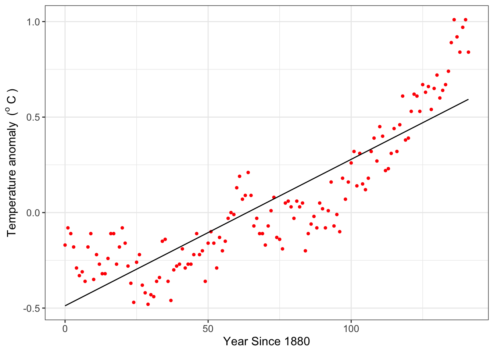
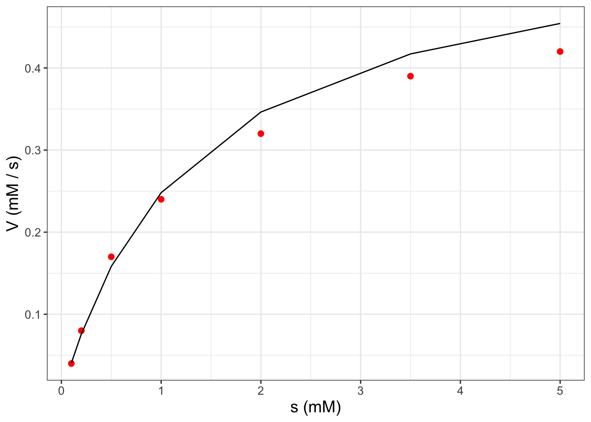

Chapters 1-7 introduced the idea of modeling with rates of change. There is much more to be stated regarding qualitative analyses of a differential equation Chapters 5, which we will return to starting in Chapter 15. But for the moment, let’s pause and recognize that a key motivation for modeling with rates of change is to quantify observed phenomena.
Oftentimes, we wish to compare model outputs to measured data. While that may seem straightforward, sometimes models have parameters (such as \(k\) and \(\beta\) for Equation 6.1 in Chapter 6). Parameter estimation is the process of determining model parameters from data. Stated differently:
Parameter estimation is the process that determines the set of parameters \(\vec{\alpha}\) that minimize the difference between data \(\vec{y}\) and the output of the function \(f(\vec{x}, \vec{\alpha})\) and measured error \(\vec{\sigma}\).
Over the next several chapters we will examine aspects of parameter estimation. Sometimes parameter estimation is synonymous with “fitting a model to data” and can also be called data assimilation or model-data fusion. We can address the parameter estimation problem from several different mathematical areas: calculus (optimization), statistics (likelihood functions), and linear algebra (systems of linear equations). We will explore how we define “best” over several chapters, but let’s first explore techniques of how this is done in R using simple linear regression.1 Let’s get started!
Note
This chapter uses following libraries: ggplot2, and tibble (all part of the tidyverse), as well as the stats library (which should be automatically loaded when R begins). See Section 2.3 on how to install packages. Prior to running any code in this section, include library(tidyverse).
8.2 Parameter estimation for global temperature data
Let’s take a look at a specific example. Table 8.1 shows anomalies in average global temperature since 1880, relative to 1951-1980 global temperatures.2 This dataset can be found in the demodelr package with the name global_temperature. To name our variables let \(Y=\mbox{ Year since 1880 }\) and \(T= \mbox{ Temperature anomaly}\).
Table 8.1: First few years of average global temperature anomalies. The anomaly represents the global surface temperature relative to 1951-1980 average temperatures.
year_since_1880
0.00
1.00
2.00
3.00
4.00
5.00
6.00
temperature_anomaly
-0.17
-0.08
-0.11
-0.18
-0.29
-0.33
-0.31
We will be working with these data to fit a function \(f(Y,\vec{\alpha})=T\). In order to fit a function in R we need three essential elements, distilled into a workflow of: Identify \(\rightarrow\) Construct \(\rightarrow\) Compute
Identify data for the formula to estimate parameters. For this example we will use the tibble (or data frame) global_temperature.
Construct the regression formula we will use for the fit. We want to do a linear regression so that \(T = a+bY\). How we represent the regression formula in R is with temperature_anomaly ~ 1 + year_since_1880. Notice that this regression formula must include named columns from your data. Said differently, this regression formula “defines a linear regression where the factors are a constant term and one is proportional to the predictor variable.” It is helpful to assign this regression formula as a variable: regression_formula <- temperature_anomaly ~ 1 + year_since_1880. In Section 8.3 we will discuss other types of regression formulas.
Compute the regression with the commandlm (which stands for linear model).
That’s it! So if we need to do a linear regression of global temperature against year since 1880, it can be done with the following code:
regression_formula <- temperature_anomaly ~1+ year_since_1880linear_fit <-lm(regression_formula, data = global_temperature)summary(linear_fit)
Call:
lm(formula = regression_formula, data = global_temperature)
Residuals:
Min 1Q Median 3Q Max
-0.35606 -0.13185 -0.03044 0.12449 0.45518
Coefficients:
Estimate Std. Error t value Pr(>|t|)
(Intercept) -0.4880971 0.0296270 -16.48 <2e-16 ***
year_since_1880 0.0076685 0.0003633 21.11 <2e-16 ***
---
Signif. codes: 0 '***' 0.001 '**' 0.01 '*' 0.05 '.' 0.1 ' ' 1
Residual standard error: 0.1775 on 140 degrees of freedom
Multiple R-squared: 0.7609, Adjusted R-squared: 0.7592
F-statistic: 445.6 on 1 and 140 DF, p-value: < 2.2e-16
What is printed on the console (and shown above) is the summary of the fit results. This summary contains several interesting things that you would study in advanced courses in statistics, but here is what we will focus on:
The estimated coefficients (starting with Coefficients: above) of the linear regression. The column Estimate lists the constants in front of our regression formula \(y=a+bx\). What follows is the statistical error for that estimate. The other additional columns concern statistical tests that show significance of the estimated parameters.
One helpful thing to look at is the Residual standard error (starting with Residual standard error above), which represents the overall, total effect of the differences between the model predicted values of \(\vec{y}\) and the measured values of \(\vec{y}\). The goal of linear regression is to minimize this model-data difference.
The summary of the statistical fit is a verbose readout, which may prohibit quickly identifying the regression coefficients or plotting the fitted results. Thankfully R has a function called predict which creates a vector of the fitted data.3
First we use the function predict to create a vector of the predicted global temperatures from our model coefficients (called fit_data). After that we add that column to our data table using the function cbind, which stands for “column bind”. The following code shows how to do this on your own:
fit_data <-predict(linear_fit, data = global_temperature)global_temperature_model <-cbind(global_temperature, .fitted = fit_data)glimpse(global_temperature_model)
I like appending _model to the original name of the data frame to signify we are working with modeled components. There is a lot to unpack with this new data frame, but the important ones are the columns year_since_1880 (the independent variable) and .fitted, which represents the fitted coefficients.
Finally, Figure 8.1 compares the data to the fitted regression line (also known as the “best fit line”).
ggplot(data = global_temperature) +geom_point(aes(x = year_since_1880, y = temperature_anomaly),color ="red",size =2 ) +geom_line(data = global_temperature_model,aes(x = year_since_1880, y = .fitted) ) +labs(x ="Year Since 1880",y ="Temperature anomaly" )

Figure 8.1: Global temperature anomaly data along with the fitted linear regression line.
A word of caution: this example is one of an exploratory data analysis illustrating parameter estimation with R. Global temperature is a measurement of many different types of complex phenomena integrated from the local, regional, continental, and global levels (and interacting in both directions). Global temperature anomalies cannot be distilled down to a simple linear relationship between time and temperature. What Figure 8.1does suggest though is that over time the average global temperature has increased. I encourage you to study the pages at NOAA to learn more about the scientific consensus in modeling climate (and the associated complexities - it is a fascinating scientific problem that will need YOUR help to solve it!)
8.3 Moving beyond linear models for parameter estimation
We can also estimate parameters or fit additional polynomial models such as the equation \(y = a + bx + cx^{2} + dx^{3} ...\) (here the estimated parameters \(a\), \(b\), \(c\), \(d\), …). There is a key distinction here: the regression formula is nonlinear in the predictor variable \(x\), but linear with respect to the parameters. Incorporating these regression formulas in R modifies the structure of the regression formula. A few templates are show in Table 8.2):
Table 8.2: Comparison of model equations to regression formulas used for R. The variable \(y\) is the response variable and \(x\) the predictor variable. Notice the structure I(..) is needed for R to signify a factor of the form \(x^{n}\).
Equation
Regression Formula
\(y=a+bx\)
y ~ 1 + x
\(y=a\)
y ~ 1
\(y=bx\)
y ~ -1+x
\(y=a+bx+cx^{2}\)
y ~ 1 + x + I(x^2)
\(y=a+bx+cx^{2}+dx^{3}\)
y~ 1 + x + I(x^2) + I(x^3)
8.3.1 Can you linearize your model?
We can estimate parameters for nonlinear models in cases where the function can be transformed mathematically to a linear equation. Here is one example: while the equation \(y=ae^{bx}\) is nonlinear with respect to the parameters, it can be made linear by a logarithmic transformation of the data:
The advantage to this approach is that the growth rate parameter \(b\) is easily identifiable from the data, and the value of \(a\) is found by exponentiation of the fitted intercept value. The disadvantage is that you need to do a log transform of the \(y\) variable first before doing any fits.
Example 8.1 A common nonlinear equation in enzyme kinetics is the Michaelis-Menten law, which states that the rate of the uptake of a substrate \(V\) is given by the equation:
\[
V = \frac{V_{max} s}{s+K_{m}},
\]
where \(s\) is the amount of substrate, \(K_{m}\) is half-saturation constant, and \(V_{max}\) the maximum reaction rate. (Typically \(V\) is used to signify the “velocity” of the reaction.)
Consider you have the following data (from Keener and Sneyd (2009)):
Table 8.3: Substrate (s) and reaction rate data (V) from Keener and Sneyd (2009).
s (mM)
0.1
0.2
0.5
1.0
2.0
3.5
5.0
V (mM / s)
0.04
0.08
0.17
0.24
0.32
0.39
0.42
Apply parameter estimation techniques to estimate \(K_{m}\) and \(V_{max}\) and plot the resulting fitting curve with the data.
Solution 8.1. The first thing that we will need to do is to define a data frame (tibble) for these data:
Figure 8.2: Scatterplot of enzyme substrate data from Example 8.1.
Figure 8.2 definitely suggests a nonlinear relationship between \(s\) and \(V\). To dig a little deeper, try running the following code that plots the reciprocal of \(s\) and the reciprocal of \(V\) (do this on your own):
ggplot(data = enzyme_data) +geom_point(aes(x =1/ s, y =1/ V),color ="red",size =2 ) +labs(x ="1/s (1/mM)",y ="1/V (s / mM)" )
Notice how easy it was to plot the reciprocals of \(s\) and \(V\) inside the ggplot command. Here’s how to see this with the provided equation (and a little bit of algebra):
In order to do a linear fit to the transformed data we will use the regression formulas defined above and the handy structure I(VARIABLE) and plot the transformed data with the fitted equation (do this on your own as well):4
# Define the regression formulaenzyme_formula <-I(1/ V) ~1+I(1/ s)# Apply the linear fitenzyme_fit <-lm(enzyme_formula,data = enzyme_data)# Show best fit parameterssummary(enzyme_fit)# Add fitted data to the modelfit_data <-predict(enzyme_fit, data = enzyme_data)enzyme_data_model <-cbind(enzyme_data, .fitted = fit_data)# Compare fitted model to the dataggplot(data = enzyme_data) +geom_point(aes(x =1/ s, y =1/ V),color ="red",size =2 ) +geom_line(data = enzyme_data_model,aes(x =1/ s, y = .fitted) ) +labs(x ="1/s (1/mM)",y ="1/V (s / mM)" )
In Exercise 8.6 you will use the coefficients from your linear fit to determine \(V_{max}\) and \(K_{m}\). When plotting the fitted model values with the original data (Figure 8.3), we need to take the reciprocal of the column .fitted when we apply cbind because the response variable in the linear model is \(1 / V\) (confusing, I know!). For convenience, the code that does the all the fitting is shown below:5
# Define the regression formulaenzyme_formula <-I(1/ V) ~1+I(1/ s)# Apply the linear fitenzyme_fit <-lm(enzyme_formula,data = enzyme_data)# Add fitted data to the modelfit_data <-predict(enzyme_fit, data = enzyme_data)enzyme_data_model <-cbind(enzyme_data, .fitted = fit_data)# Compare fitted model to the dataggplot(data = enzyme_data) +geom_point(aes(x = s, y = V),color ="red",size =2 ) +geom_line(data = enzyme_data_model,aes(x = s, y =1/ .fitted) ) +labs(x ="s (mM)",y ="V (mM / s)" )

Figure 8.3: Scatterplot of enzyme substrate data from Example 8.1 along with the fitted curve.
8.3.2 Weighted linear regression
For example, let’s return back to Figure 8.3. The Lineweaver-Burk plot has the inverse of two variables \(s\) and \(V\). As s and V both increases, then 1/s and 1/V both decrease, which may have the unintended consequence of biasing the fit at larger values of s and V. This can be problematic because much of the biochemical activity occur when s and V are low (Figure 8.2).
Another approach in linear regression is to assign weights to individual data points, which increases the influence that a given data point has on the best fit line. This approach is called weighted linear regression or also weighted least squares. To account for this in R, there is an additional option called weights:
# Define the regression formulaenzyme_formula <-I(1/ V) ~1+I(1/ s)# Apply the linear fitenzyme_fit_weighted <-lm(enzyme_formula, data = enzyme_data,weights = enzyme_data$s)summary(enzyme_fit_weighted)
In Exercise 8.7 you will investigate what happens when the weights are equal to \(\sqrt{s}\). While the choice of weights may seem arbitrary, in Chapter 10 we explore the concept of cost functions, which defines a model data residual. As we will see, accounting for uncertainties in individual data points is an exmaple of weighted linear regression.
8.4 Parameter estimation with nonlinear models
In many cases you will not be able to write your model in a linear form by applying functional transformations. Here’s the good news: you can still do a non-linear curve fit using the function nls, which is similar to the command lm with some additional information. Let’s return to an example from Chapter 2 where we examined the weight of a dog named Wilson (Figure 2.2). One model for the dog’s weight \(W\) from the days since birth \(D\) is a saturating exponential equation (Equation 8.1):
\[
W =f(D,a,b,c)= a - be^{-ct},
\tag{8.1}\]
where we have the parameters \(a\), \(b\), and \(c\). We can apply the command nls (nonlinear least squares) to estimate these parameters. Because nls is an iterative numerical method it needs a starting value for these parameters (here we set \(a = 75\), \(b=30\), and \(c=0.01\)). Determining a starting point can be tricky - it does take some trial and error.
# Define the regression formulawilson_formula <- weight ~ a - b *exp(-c * days)# Apply the nonlinear fitnonlinear_fit <-nls(formula = wilson_formula,data = wilson,start =list(a =75, b =30, c =0.01))# Summarize the fit parameterssummary(nonlinear_fit)
Formula: weight ~ a - b * exp(-c * days)
Parameters:
Estimate Std. Error t value Pr(>|t|)
a 7.523e+01 1.573e+00 47.84 < 2e-16 ***
b 9.077e+01 3.400e+00 26.70 1.07e-14 ***
c 6.031e-03 4.324e-04 13.95 2.26e-10 ***
---
Signif. codes: 0 '***' 0.001 '**' 0.01 '*' 0.05 '.' 0.1 ' ' 1
Residual standard error: 2.961 on 16 degrees of freedom
Number of iterations to convergence: 11
Achieved convergence tolerance: 6.889e-06
Similar as before, we can then use cbind to add the fitted data when displaying the fitted curve.
However once you have your fitted model, you can still plot the fitted values with the coefficients (try this out on your own).
# Add fitted data to the modelfit_data <-predict(nonlinear_fit, data = wilson)wilson_model <-cbind(wilson, .fitted = fit_data)# Plot the data with the modelggplot(data = wilson) +geom_point(aes(x = days, y = weight),color ="red",size =2 ) +geom_line(data = wilson_model,aes(x = days, y = .fitted) ) +labs(x ="Days since birth",y ="Weight (pounds)" )
8.5 Towards model-data fusion
The R language (and associated packages) has many excellent tools for parameter estimation and comparing fitted models to data. These tools are handy for first steps in parameter estimation.
More broadly the technique of estimating models from data can also be called data assimilation or model-data fusion. Whatever terminology you happen to use, you are combining the best of both worlds: combining observed measurements with what you expect should happen, given the understanding of the system at hand.
We are going to dig into data assimilation even more - and one key tool is understanding likelihood functions, which we will study in the next chapter.
8.6 Exercises
Exercise 8.1 Determine if the following equations are linear with respect to the parameters. Assume that \(y\) is the response variable and \(x\) the predictor variable.
\(y=a + bx+cx^{2}+dx^{3}\)
\(y=a \sin (x) + b \cos (x)\)
\(y = a \sin(bx) + c \cos(dx)\)
\(y = a + bx + a\cdot b x^{2}\)
\(y = a e^{-x} + b e^{x}\)
\(y = a e^{-bx} + c e^{-dx}\)
Exercise 8.2 Each of the following equations can be written as linear with respect to the parameters, through applying some elementary transformations to the data. Write each equation as a linear function with respect to the parameters. Assume that \(y\) is the response variable and \(x\) the predictor variable.
\(y=ae^{-bx}\)
\(y=(a+bx)^{2}\)
\(\displaystyle y = \frac{1}{a+bx}\)
\(y = c x^{n}\)
Exercise 8.3 Use the dataset global_temperature and the function lm to answer the following questions:
Complete the following table, which represents various regression fits to global temperature anomaly \(T\) (in degrees Celsius) and years since 1880 (denoted by \(Y\)). In the table Coefficients represent the values of the parameters \(a\), \(b\), \(c\), etc. from your fitted equation; P = number of parameters; RSE = Residual standard error.
Equation
Coefficients
P
RSE
\(T=a+bY\)
\(T=a+bY+cY^{2}\)
\(T=a+bY+cY^{2}+dY^{3}\)
\(T=a+bY+cY^{2}+dY^{3}+eY^{4}\)
\(T=a+bY+cY^{2}+dY^{3}+eY^{4}+fY^{5}\)
\(T=a+bY+cY^{2}+dY^{3}+eY^{4}+fY^{5}+gY^{6}\)
After making this table, choose the polynomial of the function that you believe fits the data best. Provide reasoning and explanation why you chose the polynomial that you did.
Finally show the plot of your selected polynomial with the data.
Exercise 8.4 An equation that relates a consumer’s nutrient content (denoted as \(y\)) to the nutrient content of food (denoted as \(x\)) is given by: \(\displaystyle y = c x^{1/\theta},\) where \(\theta \geq 1\) and \(c>0\) are both constants.
Use the dataset phosphorous to make a scatterplot with algae as the predictor (independent) variable and daphnia the response (dependent) variable.
Show that you can linearize the equation \(\displaystyle y = c x^{1/\theta}\) with logarithms.
Determine a linear regression fit for your new linear equation.
Determine the value of \(c\) and \(\theta\) in the original equation with the parameters from the linear fit.
Exercise 8.5 Similar to Exercise 8.4, do a non-linear least squares fit for the dataset phosphorous to the equation \(\displaystyle y = c x^{1/\theta}\). For a starting point, you may use the values of \(c\) and \(\theta\) from Exercise 8.4. Then make a plot of the original phosphorous data with the fitted model results.
Exercise 8.6Example 8.1 guided you through the process to linearize the following equation:
\[
V = \frac{V_{max} s}{s+K_{m}},
\]
where \(s\) is the amount of substrate, \(K_{m}\) is half-saturation constant, and \(V_{max}\) the maximum reaction rate. (Typically \(V\) is used to signify the “velocity” of the reaction.) When doing a fit of the reciprocal of \(s\) with the reciprocal of \(V\), what are the resulting values of \(V_{max}\) and \(K_{m}\)?
Exercise 8.7 Fit a linear model to the enzyme data (the data table enzyme_data) in Example 8.1 using a linear model with \(1/s\) and \(1/V\) in two ways:
A regular linear model (lm)
A linear model (lm) using the option weights=sqrt(enzyme_data$s) (\(\sqrt{s}\))
Generate a plot of both fits to the data and compare paraemter estimates \(K_{m}\) and \(V_{max}\) in both cases. How does weighting the data affect the resulting fits?
Exercise 8.8 Following from Example 8.1 and Exercise 8.6, apply the command nls to conduct a nonlinear least squares fit of the enzyme data to the equation:
\[
V = \frac{V_{max} s}{s+K_{m}},
\]
where \(s\) is the amount of substrate, \(K_{m}\) is the half-saturation constant, and \(V_{max}\) the maximum reaction rate. As starting points for the nonlinear least squares fit, you may use the values of \(K_{m}\) and \(V_{max}\) that were determined from Example 8.1. Then make a plot of the actual data with the fitted model curve.
Exercise 8.9 Consider the following data which represent the temperature over the course of a day:
Hour
Temperature
0
54
1
53
2
55
3
54
4
58
5
58
6
61
7
63
8
67
9
66
10
67
11
69
12
68
13
68
14
66
15
67
16
63
17
60
18
59
19
57
20
56
21
53
22
52
23
54
24
53
Make a scatterplot of these data, with the variable on the horizontal axis.
A function that describes these data is \(\displaystyle T = A + B \sin \left( \frac{\pi}{12} \cdot H \right) + C \cos \left( \frac{\pi}{12} \cdot H \right)\), where \(H\) is the hour and \(T\) is the temperature. Explain why this equation is linear for the parameters \(A\), \(B\), and \(C\).
Define a tibble that includes the variables \(T\), \(\displaystyle \sin \left( \frac{\pi}{12} \cdot H \right)\), \(\displaystyle \cos \left( \frac{\pi}{12} \cdot H \right)\).
Do a linear fit on your new data frame to report the values of \(A\), \(B\), and \(C\).
Define a new tibble that has a sequence in \(H\) starting at 0 from 24 with at least 100 data points, and a value of \(T\) (T_fitted) using your coefficients of \(A\), \(B\), and \(C\).
Add your fitted curve to the scatterplot. How do your fitted values compare to the data?
Exercise 8.10 Use the data from Exercise 8.9 to conduct a nonlinear fit (use the function nls) to the equation \(\displaystyle T = A + B \sin \left( \frac{\pi}{12} \cdot H \right) + C \cos \left( \frac{\pi}{12} \cdot H \right)\). Good starting points are \(A=50\), \(B=1\), and \(C=-10\).
An R package called broom also takes fitted model output in a tidy data format with the function augment. You can read more about broom from its documentation.↩︎
The process outlined here forms a Lineweaver-Burk plot.↩︎
You may notice that in Figure 8.3 the fitted curve seems to look like a piecewise linear function. This is mainly due to the distribution of data - if you have smaller gaps between measurements, the fitted curve looks smoother.↩︎